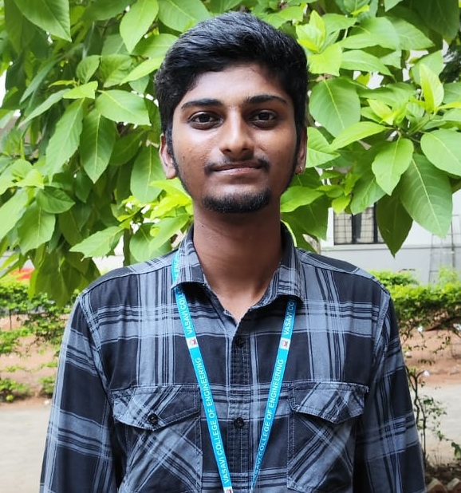

Building efficient RTL architectures and hardware-accelerated systems
I am an Electronics and Communication Engineering student with a strong focus on SoC, ASIC, and FPGA design. My expertise lies in RTL development, digital system design, and hardware-based signal processing. I have hands-on experience implementing adaptive filtering systems and embedded IoT solutions. I am actively working toward becoming a VLSI/FPGA design engineer specializing in high-performance architectures.
Digital Electronics, RTL Design, Verilog HDL, FPGA, ASIC Basics
Arduino, ESP8266, IoT Systems, Sensor Interfacing
Adaptive Filters (LMS, DLMS, DENLMS), ECG Processing
C, Python, MATLAB (Basic)
Implemented adaptive filtering using DENLMS with MAC architecture for real-time processing.
Developed monitoring system using ESP8266 with real-time alerts and sensor integration.
RTL-based pseudo-random number generator using Verilog HDL.
Gate-level modeling for multi-system digital collision detection.
Email: guntabhumesh@gmail.com
Phone: 7995682276